|
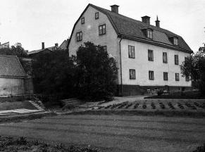
Tjärhovsgatan 1, Björns trädgård, Dosthoffska huset. 1918
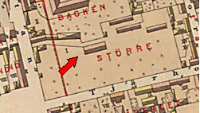
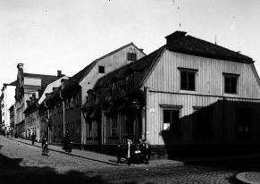
Hörnet Tjärhovsgatan 5/Östgötagatan 29. Huset rivet 1908.
Huset med den höga gaveln i bakgrunden är ett kapell i anslutning till Katarina gamla realskola. 1907.
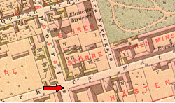
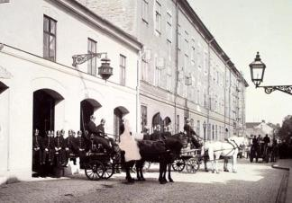
Katarina brandstation, Tjärhovsgatan 9-11. Huset är den gamla Sifvertska kasernen. 1896.
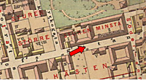
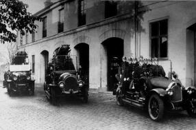
1926. Katarina brandstation
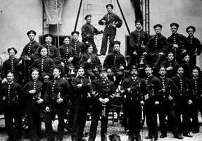
1880. Gruppbild av brandmanskap. I mitten vice brandchef Otto Emil Rosell
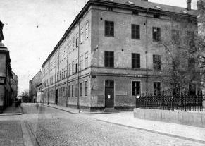
Tjärhovsgatan 11, Sifvertska kasernen, Katarina brandstation. 1900
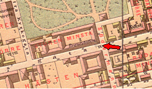
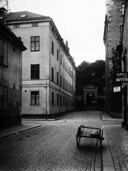
Södermannagatan norrut mot Katarina kyrkogård. Tjärhovsgatan 11 till vänster.
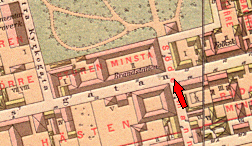
|
|
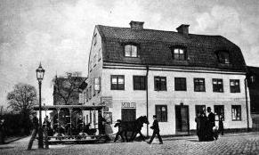
Tjärhovsgatan 2, Götgatan 49. På gatan passerar en hästspårvagn av den öppna typ som ibland användes på somrarna. 1900
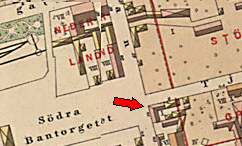
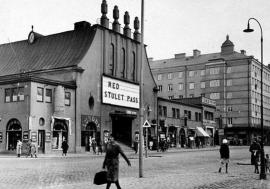
Tjärhovsgatan 2, Stora teatern, Götgatan 49. Till höger i bakgrunden ett nybyggt hus i hörnet Folkungagatan/Götgatan. 1928
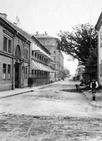
Östgötagatan söderut från Tjärhovsgatan. Tjärhovsgatan 8 t v.
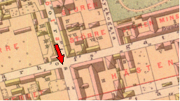
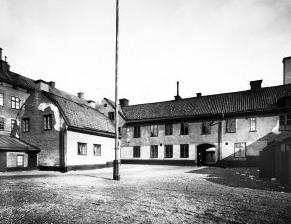
Tjärhovsgatan 12, prins Carls uppfostringsanstalt. I bakgrunden Sifvertska kasernen Tjärhovsgatan 11. 1910.
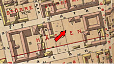
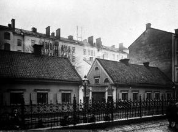
Tjärhovsgatan 16-18. 1907
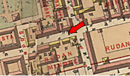
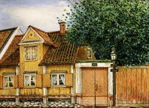
Tjärhovsgatan 16-18. Törquistska gården, "Slaktargården". Akvarell, Andreas Hjalmar Törnquist, 1875.
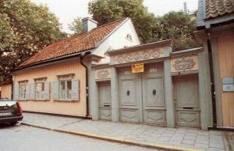
Tjärhovsgatan 16-18 (36-38). Törquistska gården, "Slaktargården".
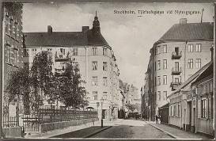
Tjärhovsgatan österut. Katarina norra folkskola t v, Törnquistska gården till höger.
|
{kind=link}
{kind=link}
{kind=link}
{kind=link}
{kind=link}
{kind=link}
{kind=link}
{kind=link}
{kind=link}